현대 싼타페 검정입니다.
각진 박스형 차체라 면이 넓고 평평합니다.
그만큼 스크래치도 숨을 곳이 없습니다.
부산 광택 후 G-PRO 코팅으로 마감한 기록입니다.
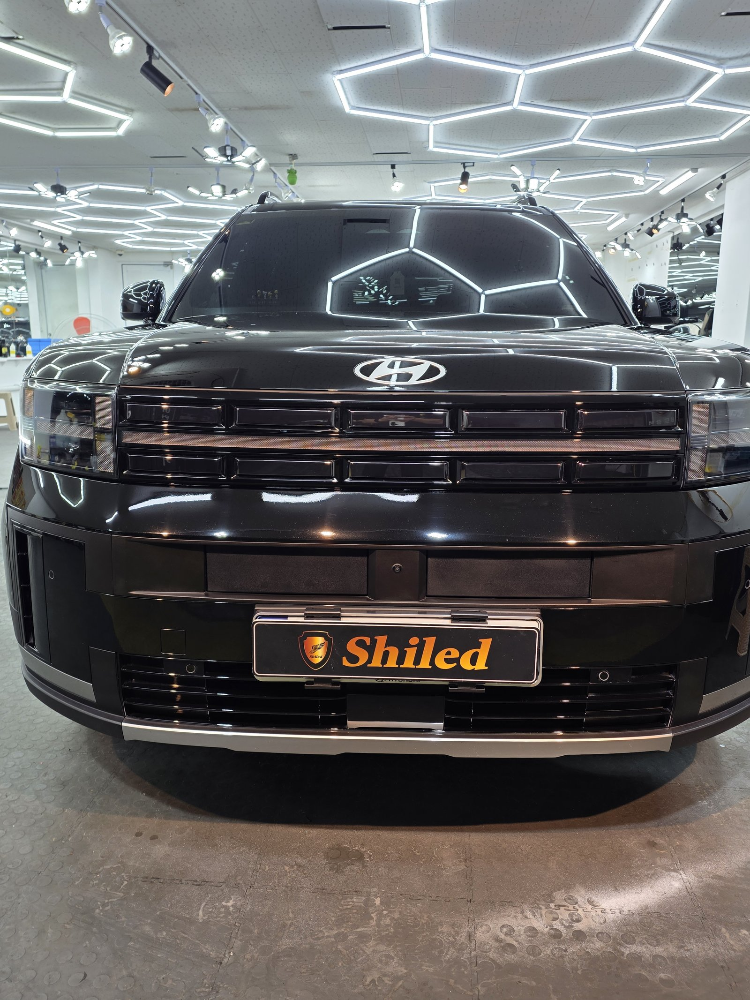
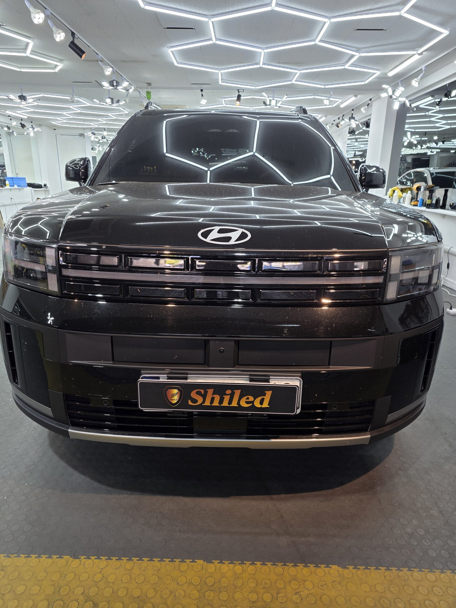
싼타페는 어디에 스크래치가 많았나요?
본넷, 테일게이트, 도어 손잡이 주변입니다.
본넷은 세차 자국이 결을 따라 남아 있었습니다.
테일게이트는 짐을 싣고 내리는 자리라 긁힘이 몰려 있었습니다.
육각 조명 아래에서 손가락으로 짚어가며 하나씩 확인했습니다.
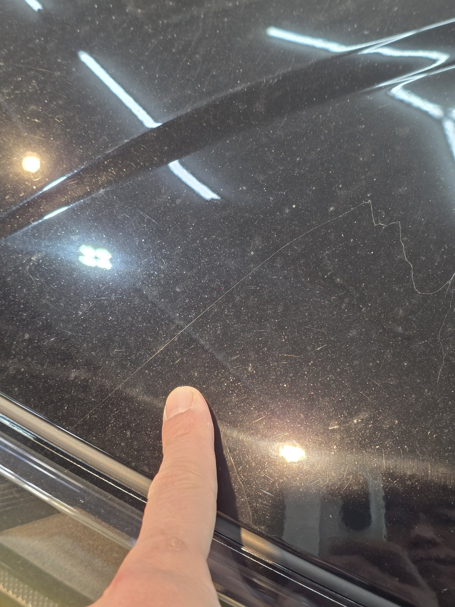
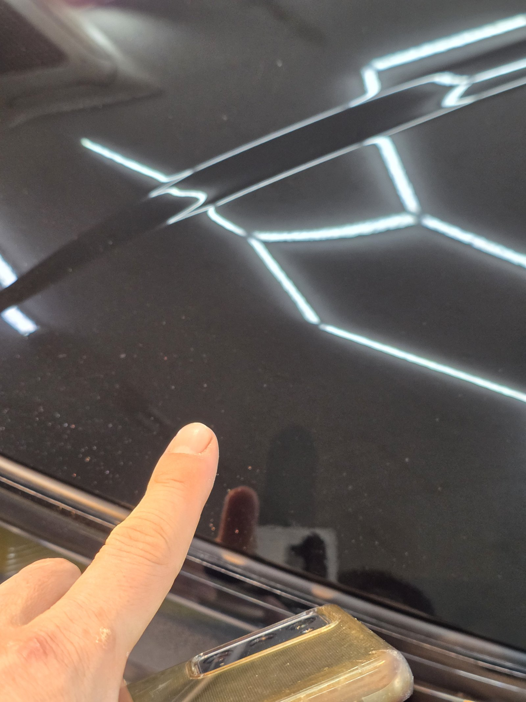
본넷 — 손가락으로 짚은 자리의 자국이 정리됐습니다
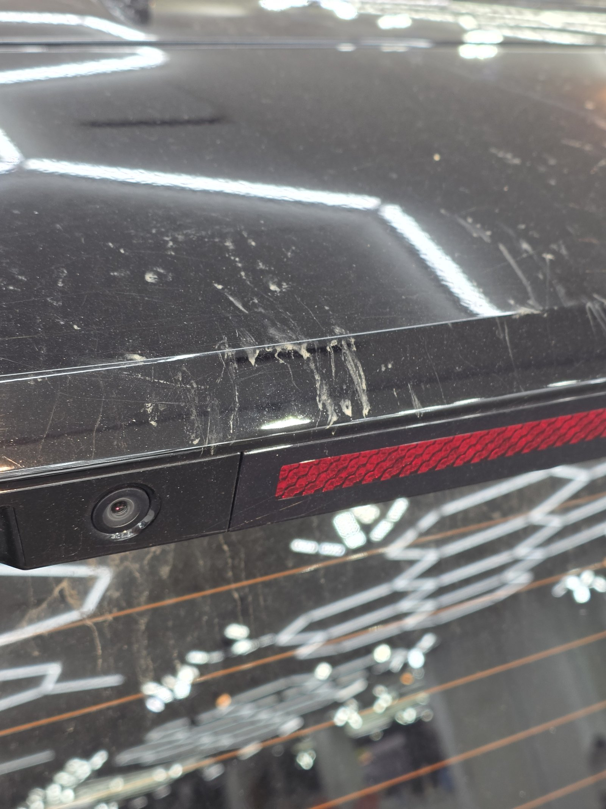
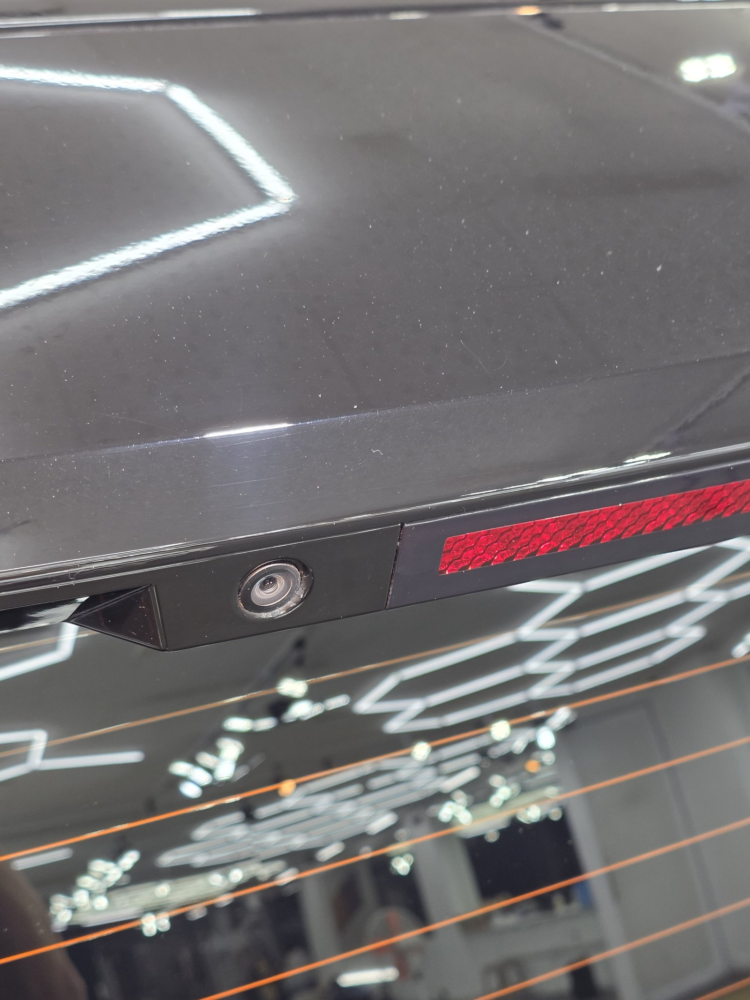
테일게이트 하단 — 짐을 실을 때 생긴 긁힘이 가장 많던 자리입니다
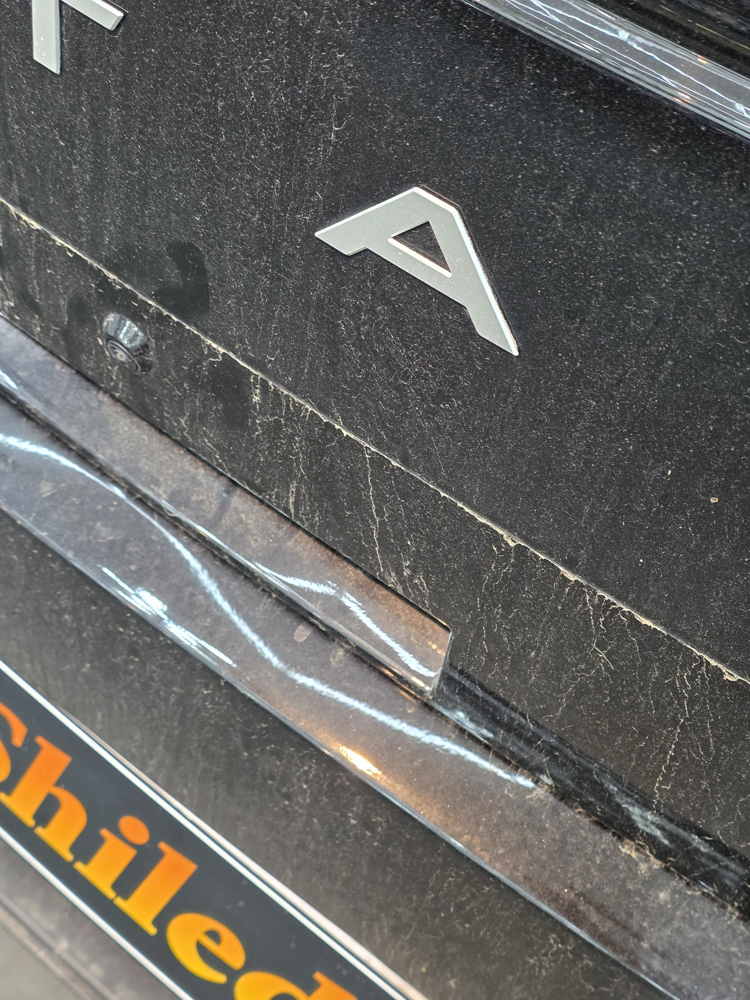
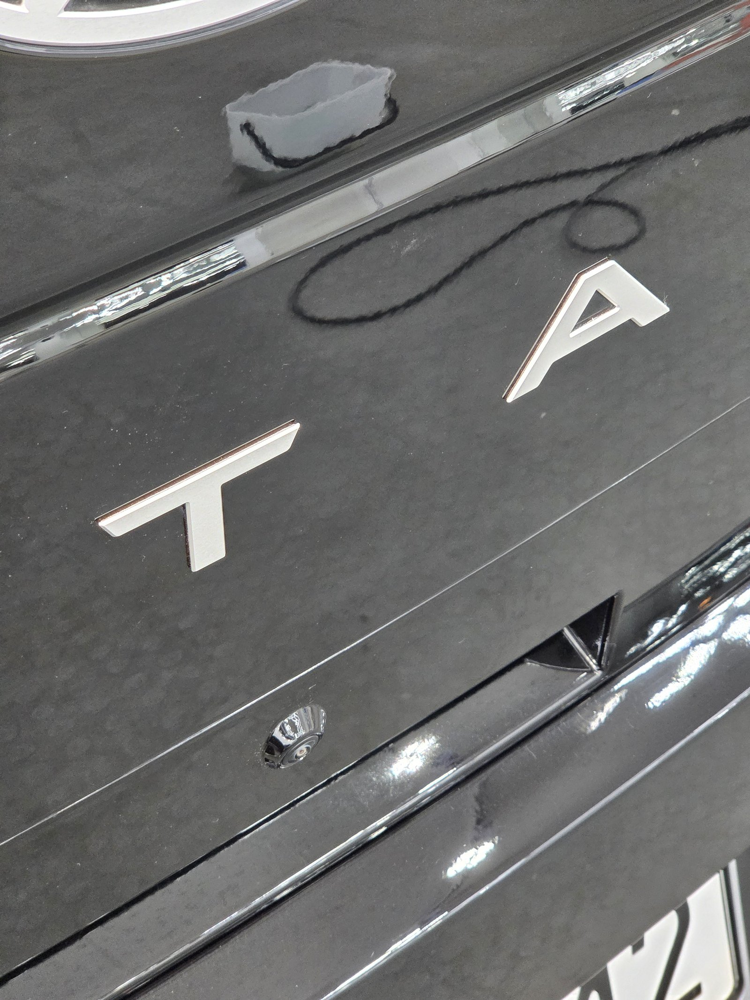
레터링 주변 — 글자 사이 좁은 면까지 정리했습니다
부산 광택, 박스형 SUV는 어떻게 진행했나요?
① 세차와 철분 제거로 오염을 먼저 걷어내고,
② 부위별로 스크래치 깊이를 확인한 뒤,
③ 컴파운드와 패드를 단계별로 바꿔가며 마감했습니다.
레터링과 몰딩이 많은 테일게이트는 작은 패드로 따로 들어갔습니다.
기술자의 팁
SUV 테일게이트는 짐을 내릴 때 가방 지퍼나 버클이 스치며 긁힘이 생깁니다. 트렁크 입구 위쪽에 짐이 닿지 않도록 한 번만 신경 써도 자국이 확 줄어듭니다.
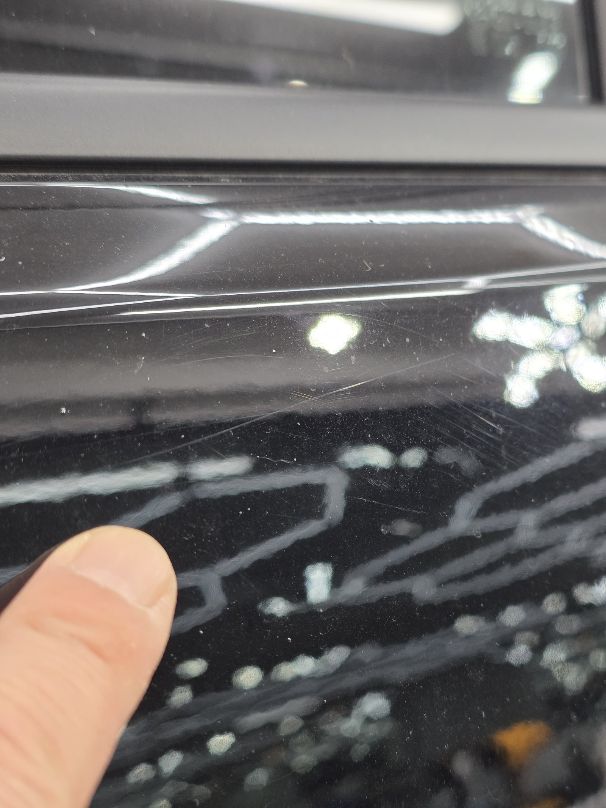
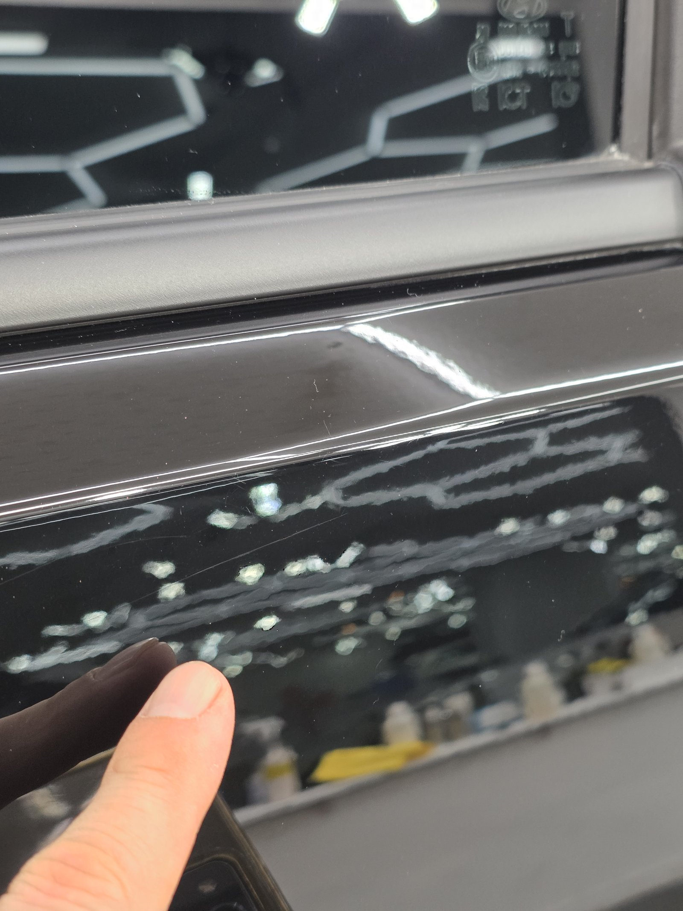
도어 — 비치는 조명 패턴이 끊김 없이 이어집니다
마감은 왜 G-PRO 코팅인가요?
광택을 마친 도장면은 보호막이 없는 맨살입니다.
G-PRO는 저희 제품 중 경도가 가장 높은 하드코팅입니다.
스크래치 내성과 내구성에 특화돼 있습니다.
짐을 자주 싣는 SUV에 맞는 선택이라 판단했습니다.
코팅제는 대표가 직접 개발·제조한 제품입니다.
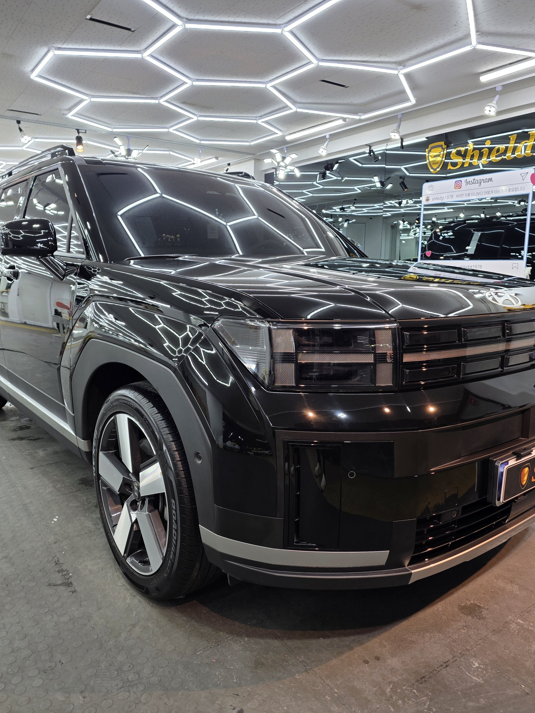
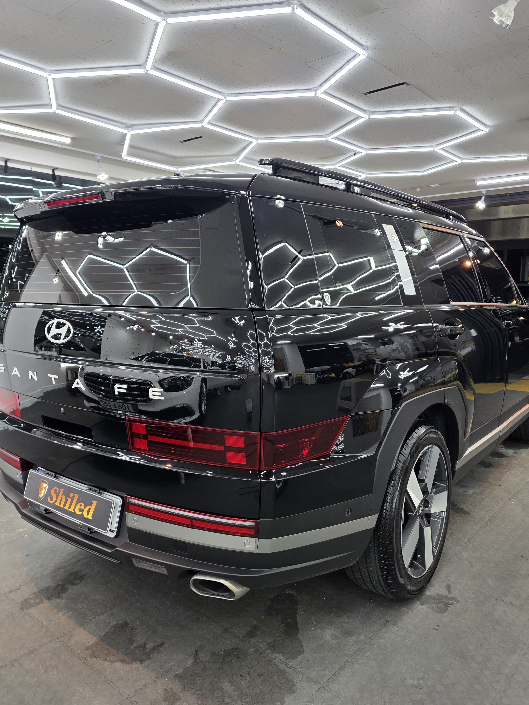
실내도 함께 정리합니다
외부 작업을 하는 동안 실내도 같이 정리합니다.
베이지 톤 실내까지 인도 전 컨디션을 맞췄습니다.
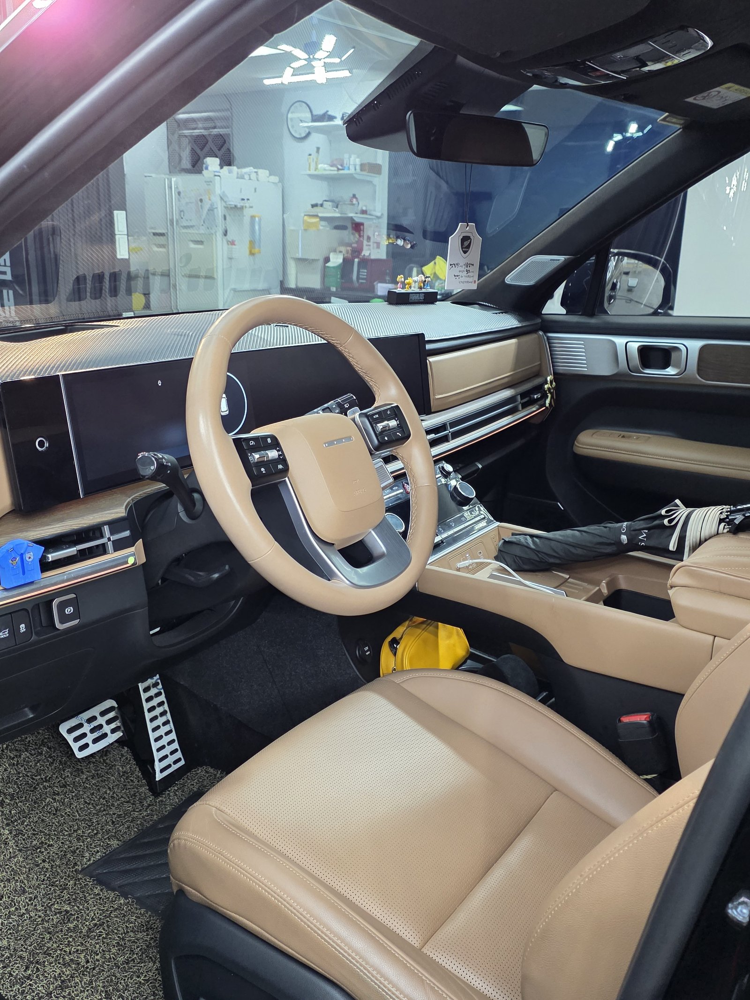
시공증명서를 함께 드립니다
모든 시공 차량에 시공증명서를 드립니다.
차종·시공일·코팅제 시리얼 번호가 적혀 있고, 홈페이지에 등록해 보증을 받으실 수 있습니다.
이번 부산 광택 작업은 G-PRO 코팅으로 기록돼 있습니다.
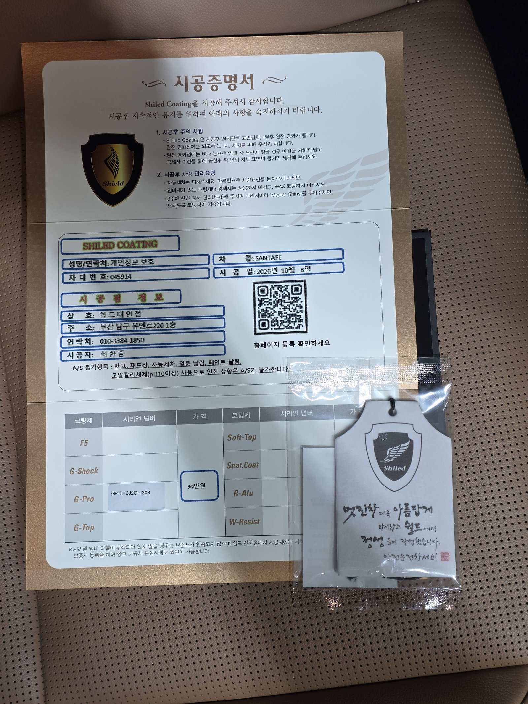
차종·시공일·코팅제 시리얼이 기재된 시공증명서
자주 묻는 질문
Q. SUV 테일게이트 스크래치도 광택으로 지워지나요?
A. 클리어층 안쪽의 얕은 긁힘은 광택으로 정리됩니다. 손톱이 걸릴 만큼 깊은 자국은 완전히 없어지지 않을 수 있어 작업 전에 직접 확인해 드립니다.
Q. 광택 후 왜 G-PRO 코팅을 올렸나요?
A. G-PRO는 저희 제품 중 경도가 가장 높은 하드코팅으로 스크래치 내성에 특화돼 있습니다. 짐을 자주 싣고 내리는 SUV의 도장면을 지키는 데 적합합니다.
Q. 광택과 유리막코팅은 뭐가 다른가요?
A. 광택은 이미 생긴 잔기스와 스크래치를 고르는 작업이고, 유리막코팅은 그 위에 보호막을 입히는 작업입니다. 광택으로 정리한 면에 코팅을 올려야 그 상태가 오래갑니다.
Q. 코팅 후 세차는 언제부터 하나요?
A. 코팅이 자리 잡을 시간이 필요하므로 시공 직후 강한 세차는 피하는 것이 좋습니다. 정확한 시점은 인도할 때 안내해 드립니다.
Q. 쉴드광택 위치와 예약은 어떻게 하나요?
A. 부산 남구 유엔로220 1F 쉴드광택입니다. 예약·상담은 010-3384-1850, 대표 최한중이 직접 상담하고 책임 시공합니다.
넓고 평평한 SUV 도장면, 스크래치부터 정리해 드립니다.
제품을 직접 만드는 사람이 직접 시공합니다.
부산에서 광택을 고민 중이시면 편하게 연락 주십시오.
어떤 차를 타냐보다 어떻게 타냐가 중요합니다~!
시공 중에는 전화를 받지 못할 때가 많습니다.
카카오톡으로 차종과 원하시는 시공을 남겨주시면 확인 후 답변드립니다.
쉴드광택 · 부산 남구 유엔로220 1F · 대표 최한중